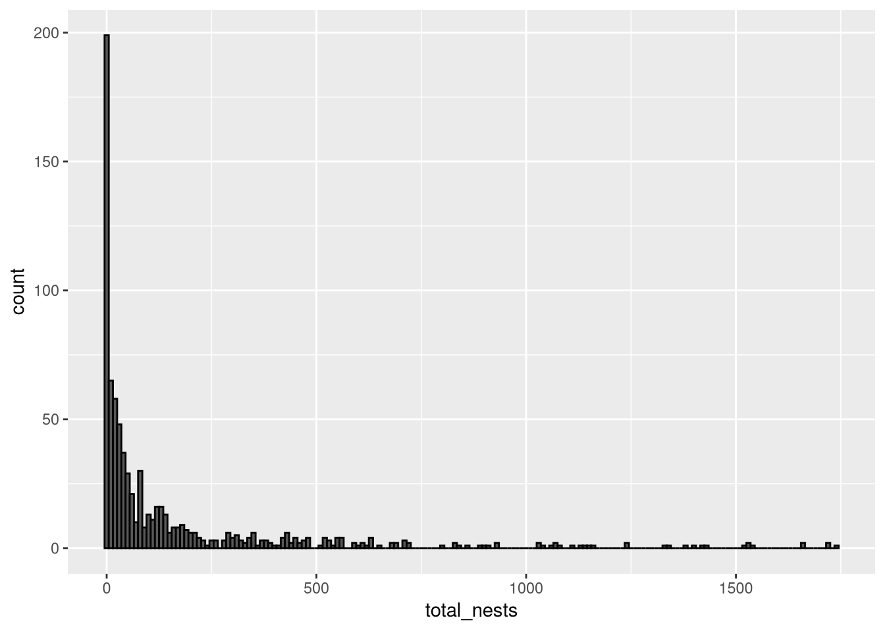
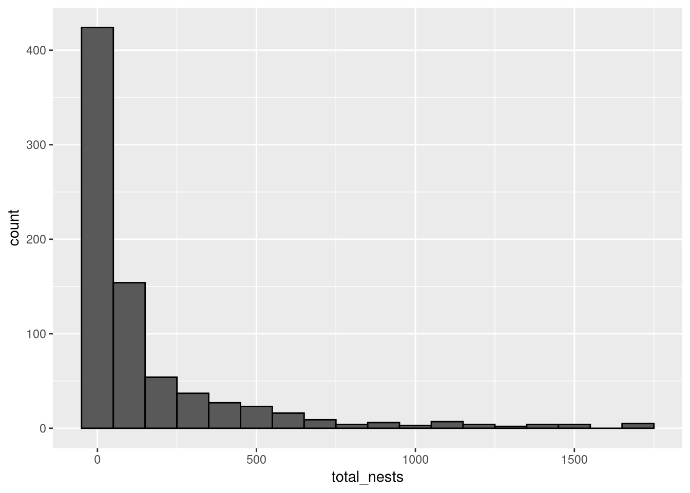
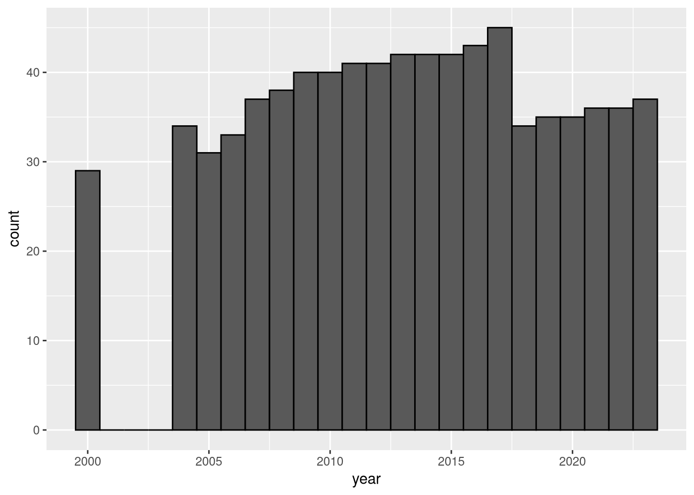
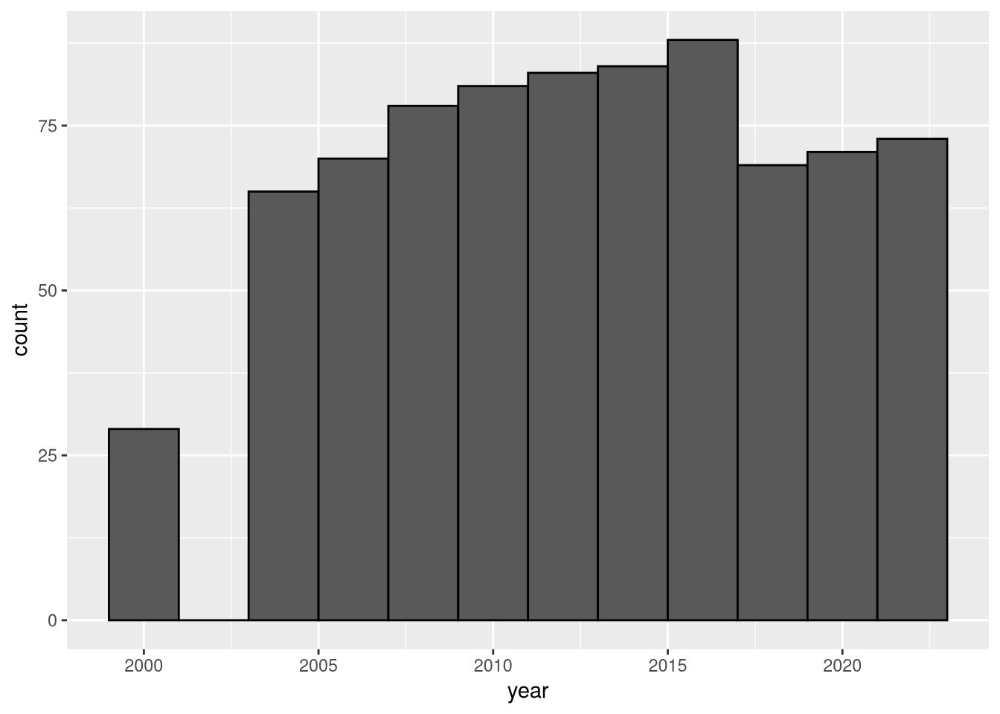

Use binning to turn numerical features into categorical features
Create and interpret histograms of numerical features
Create and interpret density plots of numerical features
Describe several different ways to define location and scale
Explain the location statistics mode, median, and mean
Explain the scale statistics IQR and standard deviation
ImportantRequired Packages
This chapter uses the following R packages:
dplyr
ggplot2
For a refresher about how to install and load packages, see the Packages section of DataLab’s R Basics workshop reader.
Whether the features we’re exploring are categorical (Chapter 2) or numerical, what we ultimately want to understand is the distribution (Section 2.4): how values are spread out across the range of possible values, which values are common, and which are rare.
The values of a numerical feature are numbers, so in addition to calculating how frequently they occur, we can also calculate how far apart they are. In other words, we can use math to summarize numerical features in ways that aren’t possible for categorical features.
3.1 Binning and Histograms
If we compute frequencies for a numerical feature, we run into a problem: most of the frequencies are 1, because most of the values are distinct. As a consequence, it’s hard to tell whether there are patterns in the distribution from the frequencies alone. Figure 2.3 (and the associated frequency table) demonstrates this problem.
One way to address the problem is by grouping values that are nearby each other, a process called binning, and then computing frequencies for the groups. Think of binning as slicing up the range of possible values into a few pieces, called bins. Binning turns a numerical feature into a categorical feature, so that we can use the methods from Chapter 2.
When we bin a feature, we have to make choices about how many bins to use and where their endpoints are. Different choices can lead to different conclusions, so in an analysis that uses binning, it’s important to investigate several choices and discuss how the conclusions change. To make comparisons between bins fair, we’ll often chose bins that have equal widths, although whether this really leads to fair comparisons depends on the nature of the data—think it through carefully!
A histogram is a bar plot where the values on the x-axis are binned. Since there are no gaps between the bins, in a histogram there are no gaps between the bars.
We can use R to bin data and make a histogram automatically. We strongly recommend setting the bin width manually (and this is also what the ggplot2 documentation recommends). For example, here’s how to make a histogram for the total_nests column with 10-nest bins:
library("ggplot2")ggplot(terns) +aes(x = total_nests) +# Set color = "black" to outline the bars, for better legibility.geom_histogram(binwidth =10, color ="black")
Warning: Removed 8 rows containing non-finite outside the scale range
(`stat_bin()`).

Figure 3.1
This is a bit clearer than the bar plot in Figure 2.3, because now we can read the count for the 0 bin, whereas in the bar plot, the count for 0 was obscured. That said, there are still a lot of bars, so let’s try a wider bin width:
ggplot(terns) +aes(x = total_nests) +geom_histogram(binwidth =100, color ="black")
Warning: Removed 8 rows containing non-finite outside the scale range
(`stat_bin()`).

Figure 3.2
Notice that this histogram has fewer sudden jumps and drops than the previous one (Figure 3.1). Increasing bin width has a smooting effect, making large-scale trends easier to see but fine details harder to see.
Important
When you bin a feature (whether for a histogram or some other purpose), always check several different binning strategies, because they might lead to different conclusions. Point out and explain the discrepancies when you share the results. This is a form of statistical due diligence.
A histogram is usually more appropriate than a bar plot for visualizing features that represent a continuous quantity, even if they measure it in a discrete way, because there are no gaps between the bars. For instance, the year feature is discrete, but it measures time, which we usually think of as continuous. We can make a histogram without binning by setting the bin width to 1:
ggplot(terns) +aes(x = year) +geom_histogram(binwidth =1, color ="black")

Figure 3.3
Compared to the bar plot Figure 2.2, the histogram makes it clear that each bar spans an entire year.
There’s no need to bin the year feature, and in this case, the smoothing effect of binning actually makes it harder to interpret:
ggplot(terns) +aes(x = year) +geom_histogram(binwidth =2, color ="black")

Figure 3.4
With 2-year bins, the drop in 2018 is still visible, but it’s hard to tell exactly which year has the drop (is it 2018 or 2019 or both?). Other details are also obscured.
Note
R’s functions for making histograms assume numerical data, but we can make a histogram for ordinal data in two steps, by first binning and then making a bar plot.
R’s cut function bins data (without making a histogram).
3.2 Density Plots
Binning and histograms help us understand the shape of the distribution of a numerical feature, but there’s still a problem. For continuous features, histograms can overstate differences in frequency from one bin to the next, because the edge of the bin is a sharp dividing line. We can remedy this by blurring or smoothing the divisions between bins.
A density is a function that represents the shape of a distribution. Think of a density as a smooth curve that traces the tops of the bars in a histogram. A density plot is a plot that shows a density. Compared to a histogram, the divisions between the bins are no longer visible, but the pattern of the tops of the bars still is.
We can use R and ggplot2 to draw a density plot. Here’s a density plot for the total_nests feature:
Warning: Removed 8 rows containing non-finite outside the scale range
(`stat_density()`).
Figure 3.5
Notice that the trends from Figure 3.1 are still present. The density is high near 0, drops off quickly, and then has a long tail with a few small peaks.
Although the density plot has the same shape as the histogram, the quantity on the y-axis is not counts or frequencies. Instead, we scale the density curve the that total area underneath it is 1 or 100%. This is because the area under any part of the density is an estimate of the probability of randomly drawing the corresponding values on the x-axis.
Mathematically, we estimate a density by putting a small, smooth “bump” function, called a kernel, at each observed value of the feature and then adding all of these up. How much the bump spreads out, called the bandwidth, is a bit like a bin width, with larger bandwidths leading to smoother densities.
When we make a density plot, R uses a statistical formula to compute a default bandwidth. The default bandwidth often strikes a good balance between showing coarse trends and fine details. We can change the bandwidth through the adjust parameter, which is multiplied by the default (so adjust = 0.5 means half of the default). This way the bandwidth is still estimated from and on a similar scale as the data. Here’s the density plot for total_nests with a smaller bandwidth:
Warning: Removed 8 rows containing non-finite outside the scale range
(`stat_density()`).
Figure 3.7
Decreasing the bandwidth makes the density rougher, while increasing it makes it smoother. As with bin width for histograms, it’s important to try different bandwidths for density plots, since different amounts of smoothing can lead to different conclusions.
The lack of bin edges in density plots can make them easier to read than histograms, but an important limitation to keep in mind is that density plots are a kind of estimate, and as a consequence, they’re sensitive to the number of observations in the dataset. For a dataset with a relatively small number of observations (for example, less than 30), a histogram or bar plot is a more faithful representation.
Density plots are especially helpful for comparing how a feature is distributed across multiple groups, because we can display all of the densities in a single plot. Let’s try this for the total_nests feature by using the regions from region_3 as groups. We’ll first filter out the unexpected regions Arizona, Kings, and Sacramento, because they have low numbers of observations. Here’s the plot:
library("dplyr")
Attaching package: 'dplyr'
The following objects are masked from 'package:stats':
filter, lag
The following objects are masked from 'package:base':
intersect, setdiff, setequal, union
Warning: Removed 8 rows containing non-finite outside the scale range
(`stat_density()`).
Figure 3.8
This reveals that the nest counts for Central tend to be low in comparison to S.F. Bay and Southern. Curiously, a substantial proportion of nest counts for S.F. Bay are between 250 and 500. This could mean that there are sites in the S.F. Bay region that are sufficiently well-protected that large flocks of terns use them every year, whereas other sites see varying numbers of birds each year, depending on their condition. There’s certainly more we could hypothesize based on the plot and investigate further using other features. This is an example of exploring two features simultaneously, which we’ll learn more about in Chapter 5.
3.3 Location Statistics
So far, we’ve only used visualizations to summarize numerical features. In some cases, we might also want to use quantitative summaries. We’ll focus on quantities that attempt to answer two questions about a feature’s distribution:
What is the location of the data? For 1-dimensional data, where are most of the observations on the number line? For higher-dimensional data, where are most of the observations in the space?
What is the scale of the data? In other words, how much do the observations spread out?
We can also ask other questions about the distribution, such as how many peaks it has and whether it’s symmetrical around some central point, but these are often easier to answer with visualizations. Asking about location and scale is a sensible starting point.
The questions leave how to quantify location and scale open to interpretation, but there are a few widely-used and well-studied choices. The remainder of this section introduces location statistics, and Section 3.4 introduces scale statistics.
To help develop intuition, we’ll use this small, artificial “toy” dataset in several examples:
toy =c(-2, -1, -1, -1, 0, 2, 6)
We’ll also use the total_nests feature from the California least terns dataset. Recall the density plot for the feature (Figure 3.5). Where would you say the distribution is located, if you had to pick just one point?
3.3.1 Mode
First, let’s think of location as the value that occurs most frequently. This is the mode, which we introduced for categorical features in Section 2.4.1. For continuous features, the mode is at the tallest peak of the density curve. Values at or near the mode occur more frequently than any others.
For the toy dataset, the mode is -1, because it occurs more than any of the other values. If we didn’t want to count ourselves, we could compute this with the table function.
For total_nests, the mode is at or close to 0, depending on whether we treat the feature as discrete and estimate with the frequencies or treat it as continuous and estimate with the density curve.
An advantage of the mode is that we can compute it for any type of feature, categorical or numerical.
The mode also has some disadvantages. The mode might occur only slightly more often than other values, and it might be far away from many other values that can occur. The latter is certainly the case for total_nests, where the mode is 0 but some of the values exceed 1,500.
3.3.2 Median
Next, let’s think of location as the midpoint of the values. In other words, we’ll sort the values and find the one in the middle. This statistic is called the median.
In R, the median function computes the median of a feature. For the toy dataset, the median is:
median(toy)
[1] -1
This means half of the observed values are less than or equal to -1 and half are greater than or equal. By coincidence, the median is the same as the mode. So -1 also occurs more frequently than any other value.
For total_nests, the median is:
median(terns$total_nests, na.rm =TRUE)
[1] 42
It’s meaningful that the median is larger than the mode (0). The median tells us half of the observed values of total_nests are less than or equal to 42 and half are greater than or equal. Even though the mode is more common than any other value, if we only paid attention to it, we’d be ignoring more than half of the observed values!
NoteNote: Removing Missing Values
Most statistical summary functions in R provide an na.rm parameter to control whether missing values are removed before computing the statistic. By default, it’s FALSE and missing values are kept. Set na.rm = TRUE to remove the missing values. This is useful for quick, initial investigations of a dataset.
In a complete analysis, you should think carefully about what the missing values mean, whether they exhibit any patterns, and whether there are enough non-missing values for statistical summaries to be good representatives of the data. We’ll learn more about this in Chapter 6.
Another name for the median is the 50th percentile, because the median is greater than roughly 50% of the values. We can also estimate other percentiles. For instance, the 25th percentile is the value one-quarter of the way through the sorted data. Quantile is another word for percentile.
In R, we can compute percentiles with the quantile function:
quantile(toy)
0% 25% 50% 75% 100%
-2 -1 -1 1 6
quantile(terns$total_nests, na.rm =TRUE)
0% 25% 50% 75% 100%
0 5 42 164 1741
Statisticians call the median a robust statistic, because it’s not affected much by extreme (very small or very large) values. For example, if we change the largest value 6 in the toy dataset to 1,000,000, the median stays the same:
Likewise, if we put a new value, 100, in the dataset, the median only increases slightly:
toy2 =c(toy2, 100)median(toy2)
[1] -0.5
Robustness is a useful property because extremes rarely represent a majority of the data—that’s why they’re extremes. Sometimes extreme values can even be erroneous, but the median is relatively unaffected.
The cost of robustness is that the median uses information less efficiently than the next statistic we’ll learn about (Section 3.3.3). To see this, think about how we compute the median: we only use the values in the middle, but the other values might also contain important information.
3.3.3 Mean
Finally, let’s think of location as a balancing point for the values. Imagine trying to balance the distribution (picture a density plot, such as Figure 3.5) on a triangular wedge. Where would you have to place the wedge? This statistic is called the mean or average.
NoteDefinition: Sample Mean
Mathematically, for data \(x_1, x_2, \dots, x_n\), the sample mean \(\bar{x}\) is defined as \[
\begin{align*}
\bar{x}
&= \frac{1}{n} (x_1 + x_2 + \dots + x_n) \\
&= \frac{1}{n} \sum_{i=1}^n x_i \\
\end{align*}
\]
In words, we add up all of the values and then divide by the number of values.
Statisticians conventionally write an overbar to indicate a sample mean, as in \(\bar{x}\). They write the unknown population mean, which is estimated by the sample mean, as the Greek letter\(\mu\).
In R, the mean function computes the mean of a feature. For the toy dataset, the mean is:
mean(toy)
[1] 0.4285714
Notice that the mean is quite a bit larger than the median (-1). This is because of the value 6, which is relatively far from the other values and thus exerts a lot of influence (in the balancing metaphor, it has a lot of leverage).
For total_nests, the mean is:
mean(terns$total_nests, na.rm =TRUE)
[1] 162.8455
Once again, the mean is larger than than the median (42). As we saw in the density plot (Figure 3.5), the total_nests feature contains a few very large values. These don’t affect the median much, but they do affect on the mean.
The mean is good for getting a general idea of where the center of the data is. It’s more efficient than the median for this purpose, because it takes all of the data into account.
On the other hand, the mean is sensitive to extreme values, especially in comparison to the median. If the mean seems unexpectedly small or large, check for extreme values.
Tip
We recommend using the mean and median together to get the best of both. Comparing the mean and median can provide insight into how asymmetric the distribution is. For instance, if the mean is much larger than the median, then the distribution likely has a long right tail. Of course, a visualization is still generally a better summary than any number of statistics.
NoteNote: Other Means
There are other ways to define the mean, with different advantages and disadvantages.
The mean defined in this section is formally called the arithmetic mean. The arithmetic mean is well-suited to values that can be combined naturally by adding, such as physical measurements (length, weight, etc.) and counts.
The scale of a distribution refers to how spread out its values are. As with location, there are many different ways to define scale and thus many different statistics. We’ll focus on two popular scale statistics.
3.4.1 Interquartile Range
One way to think about the scale of a distribution is as the distance between its tails. If we take a representative value from each tail, we can compute the distance between them by subtracting. The question is: which values should we choose?
The minimum and maximum might seem tempting, since they’re the farthest along each tail. But that becomes a problem if most of the data lie close to the center, with the minimum and maximum among just a few extreme values. By using them, we’d overestimate how much the data spread out. The minimum and maximum can also vary substantially from one sample to the next, which means our scale estimates could as well—they’d be unreliable for estimating the scale of the population.
A better choice is something near the tails but less sensitive to extremes. Section 3.3.2 explained that the median is robust, meaning it’s mostly unaffected by extreme values. It turns out most other percentiles are also relatively robust. We can use the distance between the 75th and 25th percentile as a robust estimator for scale. Conveniently, we can also interpret this as the width of the middle 50% of the data.
The 25th, 50th, and 75th percentiles are called quartiles (with an “r”) because they separate the data into four parts (hence “quart-”). So the distance between the 75th and and 25th percentile is called the interquartile range (IQR).
In R, the IQR function computes the IQR of a feature. For the toy dataset, the IQR is:
IQR(toy)
[1] 2
As a reminder, the dataset looks like this:
toy
[1] -2 -1 -1 -1 0 2 6
And the quartiles are:
quantile(toy)
0% 25% 50% 75% 100%
-2 -1 -1 1 6
The IQR is 2 because the 25th percentile is -1 and the 75th percentile is 1. The middle 50% of the data is 2 units wide.
As we mentioned, IQR is relatively unaffected by extreme values. If we change the largest value 6 in the toy dataset to 1,000,000, the IQR stays the same. The IQR has the same tradeoffs as the median: it’s a robust estimator of scale, but it’s less efficient than estimators that use all of the data.
For total_nests, the IQR is:
IQR(terns$total_nests, na.rm =TRUE)
[1] 159
This means the middle 50% of the data is 159 nests wide. We can gain a better understanding of the scale by examining the quartiles, too:
quantile(terns$total_nests, na.rm =TRUE)
0% 25% 50% 75% 100%
0 5 42 164 1741
Notice that the 25th percentile is closer to the median than the 75th percentile. The large IQR shows that the data are very spread out; the quartiles show that most of that spread is in the right tail. In other words, the distribution is asymmetrical, as we saw in Figure 3.5.
Tip
Visualizations are almost always the best way to study distributions. If you can’t make a visualization, examine multiple statistics rather than just one. A lone statistic is unable to capture nuance and can even be misleading.
3.4.2 Standard Deviation
Another way to think about scale is as the typical distance from any value to the center of the distribution. This interpretation raises three questions:
What do we mean by “typical” distance?
How do we measure distance?
What do we mean by the “center” of the distribution?
As usual, different answers to these questions lead to different statistics. For our purposes, we’ll say:
Typical distance is mean distance.
We measure distance as the squared difference. Squaring ensures that the distances are non-negative.
The center of the distribution is the sample mean.
The difference between a point and a mean is called a deviation. If we square the deviations and compute their mean, the result is called the variance and is measured in squared units. To get back to the original units, we can take a square root of the variance. This is called the standard deviation.
NoteDefinition: Sample Variance and Sample Standard Deviation
Mathematically, for data \(x_1, x_2, \dots, x_n\) with sample mean \(\bar{x}\) (Section 3.3.3), the sample variance \(s^2\) is defined as
In words, we compute the mean of the squared distances to the sample mean. We divide by \(n - 1\) rather than \(n\) as a statistical correction for the fact that \(\bar{x}\) is also an estimator.
The sample standard deviation \(s\) is defined as the square root of the variance \(s^2\).
Statisticians conventionally write the unknown population variance, which is estimated by the sample variance, as \(\sigma^2\). Thus they write the unknown population standard deviation as \(\sigma\).
Think of the standard deviation as the average distance from a value to the mean. Larger standard deviations mean the data are more spread out. As a rule of thumb, most of the data will be within 3 standard deviations of the mean.
In R, the sd function computes the standard deviation of a feature. For the toy dataset, the standard deviation is:
sd(toy)
[1] 2.760262
This means that on average, values are about 2.76 units from the mean 0.43. That’s roughly consistent with the range of values in the toy dataset.
For total_nests, the standard deviation is:
sd(terns$total_nests, na.rm =TRUE)
[1] 293.1786
This means that on average, the number of nests is 162 (the mean) plus or minus 293. We know the number of nests can’t be negative, so the lower bound is actually 0. The large standard deviation reflects both the numerous 0 values on the left and the very large values on the right.
The standard deviation and IQR are analogous to the mean and median, respectively. The standard deviation is not robust, but uses the available data more efficiently. We recommend examining both.
3.5 A Final Note
The summary function computes a detailed statistical summary of an R object. For instance, here’s the summary for the total_nests column:
summary(terns$total_nests)
Min. 1st Qu. Median Mean 3rd Qu. Max. NA's
0.0 5.0 42.0 162.8 164.0 1741.0 8
For data frames, the summary function computes a summary of each column, guessing an appropriate statistic based on the column’s data type:
summary(terns)
year site_name site_name_2013_2018 site_name_1988_2001
Min. :2000 Length:791 Length:791 Length:791
1st Qu.:2008 Class :character Class :character Class :character
Median :2013 Mode :character Mode :character Mode :character
Mean :2013
3rd Qu.:2018
Max. :2023
site_abbr region_3 region_4 event
Length:791 Length:791 Length:791 Length:791
Class :character Class :character Class :character Class :character
Mode :character Mode :character Mode :character Mode :character
bp_min bp_max fl_min fl_max
Min. : 0.0 Min. : 0.0 Min. : 0.00 Min. : 0.00
1st Qu.: 3.0 1st Qu.: 5.0 1st Qu.: 0.00 1st Qu.: 0.00
Median : 30.0 Median : 38.0 Median : 7.00 Median : 9.00
Mean : 129.3 Mean : 151.0 Mean : 40.82 Mean : 50.35
3rd Qu.: 127.5 3rd Qu.: 148.5 3rd Qu.: 38.00 3rd Qu.: 47.50
Max. :1691.0 Max. :1691.0 Max. :1025.00 Max. :1145.00
NA's :8 NA's :8 NA's :12 NA's :12
total_nests nonpred_eggs nonpred_chicks nonpred_fl
Min. : 0.0 Min. : 0.00 Min. : 0.00 Min. : 0.000
1st Qu.: 5.0 1st Qu.: 2.00 1st Qu.: 0.00 1st Qu.: 0.000
Median : 42.0 Median : 12.00 Median : 3.00 Median : 0.000
Mean : 162.8 Mean : 60.29 Mean : 44.37 Mean : 4.181
3rd Qu.: 164.0 3rd Qu.: 69.00 3rd Qu.: 22.00 3rd Qu.: 2.000
Max. :1741.0 Max. :748.00 Max. :1063.00 Max. :207.000
NA's :8 NA's :164 NA's :198 NA's :240
nonpred_ad pred_control pred_eggs pred_chicks
Min. : 0.000 Length:791 Min. : 0.00 Min. : 0.000
1st Qu.: 0.000 Class :character 1st Qu.: 2.00 1st Qu.: 0.000
Median : 0.000 Mode :character Median : 6.50 Median : 2.000
Mean : 0.851 Mean : 41.57 Mean : 8.519
3rd Qu.: 1.000 3rd Qu.: 25.50 3rd Qu.: 7.500
Max. :22.000 Max. :417.00 Max. :149.000
NA's :234 NA's :737 NA's :737
pred_fl pred_ad pred_pefa pred_coy_fox
Min. : 0.000 Min. : 0.00 Length:791 Length:791
1st Qu.: 0.000 1st Qu.: 0.00 Class :character Class :character
Median : 0.000 Median : 0.50 Mode :character Mode :character
Mean : 2.365 Mean : 2.69
3rd Qu.: 2.000 3rd Qu.: 2.00
Max. :23.000 Max. :41.00
NA's :739 NA's :733
pred_meso pred_owlspp pred_corvid pred_other_raptor
Length:791 Length:791 Length:791 Length:791
Class :character Class :character Class :character Class :character
Mode :character Mode :character Mode :character Mode :character
pred_other_avian pred_misc total_pefa total_coy_fox
Length:791 Length:791 Min. : 0.000 Min. : 0.000
Class :character Class :character 1st Qu.: 0.000 1st Qu.: 0.000
Mode :character Mode :character Median : 0.000 Median : 0.000
Mean : 1.741 Mean : 9.464
3rd Qu.: 0.000 3rd Qu.: 0.000
Max. :34.000 Max. :348.000
NA's :737 NA's :735
total_meso total_owlspp total_corvid total_other_raptor
Min. : 0.000 Min. : 0.000 Min. : 0.000 Min. : 0.000
1st Qu.: 0.000 1st Qu.: 0.000 1st Qu.: 0.000 1st Qu.: 0.000
Median : 0.000 Median : 0.000 Median : 0.000 Median : 0.000
Mean : 5.556 Mean : 1.455 Mean : 7.962 Mean : 1.712
3rd Qu.: 0.000 3rd Qu.: 0.500 3rd Qu.: 2.000 3rd Qu.: 1.000
Max. :244.000 Max. :41.000 Max. :177.000 Max. :43.000
NA's :737 NA's :736 NA's :739 NA's :739
total_other_avian total_misc first_observed last_observed
Min. : 0.000 Min. : 0.000 Length:791 Length:791
1st Qu.: 0.000 1st Qu.: 0.000 Class :character Class :character
Median : 0.000 Median : 0.000 Mode :character Mode :character
Mean : 8.898 Mean : 6.566
3rd Qu.: 2.000 3rd Qu.: 0.000
Max. :140.000 Max. :168.000
NA's :742 NA's :738
first_nest first_chick first_fledge
Length:791 Length:791 Length:791
Class :character Class :character Class :character
Mode :character Mode :character Mode :character
These summaries are useful as a quick overview of an entire dataset. We strongly recommend following up with visualizations to develop a more nuanced understanding of individual features and their distributions.
Matejka, Justin, and George Fitzmaurice. 2017. “Same Stats, Different Graphs: Generating Datasets with Varied Appearance and Identical Statistics Through Simulated Annealing.”Proceedings of the 2017 CHI Conference on Human Factors in Computing Systems (New York, NY, USA), CHI ’17, May 2, 1290–94. https://doi.org/10.1145/3025453.3025912.